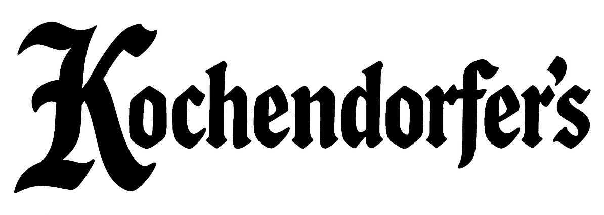
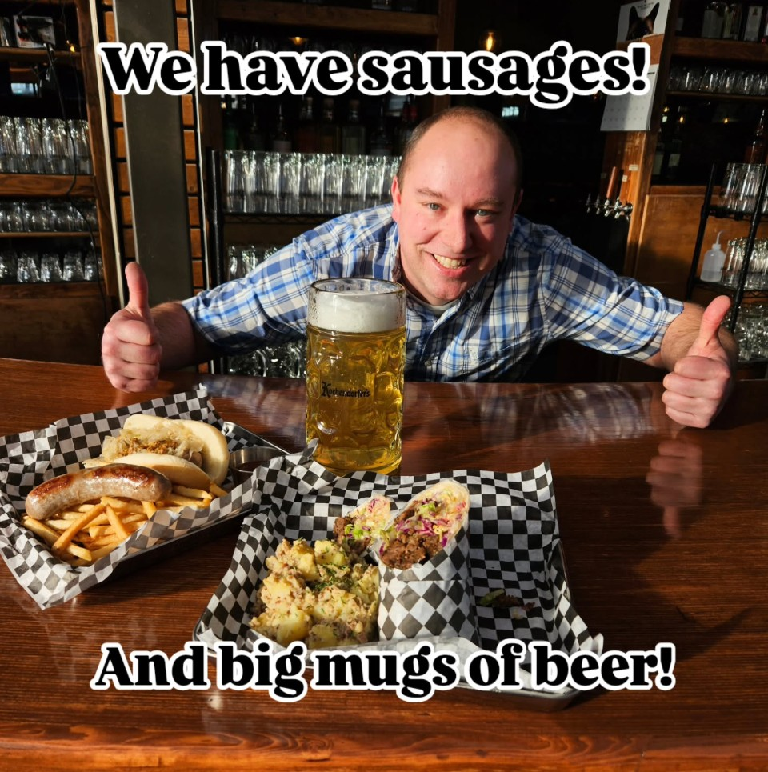

We show all Mariners, Sounders, and Kraken games on our TVs throughout the bar.
Join us from 7:30–9:00 pm for trivia, drinks, and prizes.
$10 1-Litre Tankards of Georgetown Tavern beer — all day Thursday.
We're a friendly neighborhood pub offering an eclectic variety of German street and tavern food. Featuring our take on a Döner Kebab, the Kebaburrito.
View Menu (PDF)